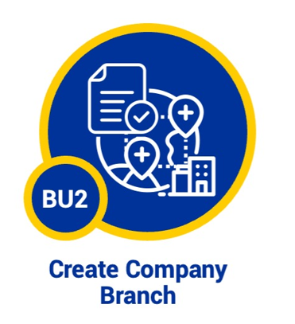

Branch registration using wallets and attestations
Cross-border registration of a company branch in a Business Register in another EU or EEA Member State, using the European Digital Identity Wallet to present issued (Q)EAAs, with Business Registers acting as relying parties, and leveraging a European Business Wallet (EBW).
Demo service in the WE BUILD pilot. All data is fictitious test data.

Choose your situation
Norwegian company registers a branch abroad
Norway is the home Member State
Registration of power of attorney (EU PoA)
Register a power of attorney to represent a Norwegian company when registering a branch in another country.
Obtain power of attorney (EU PoA)
The authorised representative obtains their EU PoA as an electronic attestation of attributes.
Obtain EUCC
The authorised representative obtains the company's EUCC as an electronic attestation of attributes.
Branch registration in the other country
Done in that country’s own solution, outside this demo.
Foreign company registers a branch in Norway
Norway is the host Member State
Obtain EU PoA and EUCC
Obtained in your home Member State, in that country’s own solution.
Carry out branch registration
The authorised representative of the foreign company carries out the registration of a Norwegian branch.
Available in this solution Done in another country’s solution